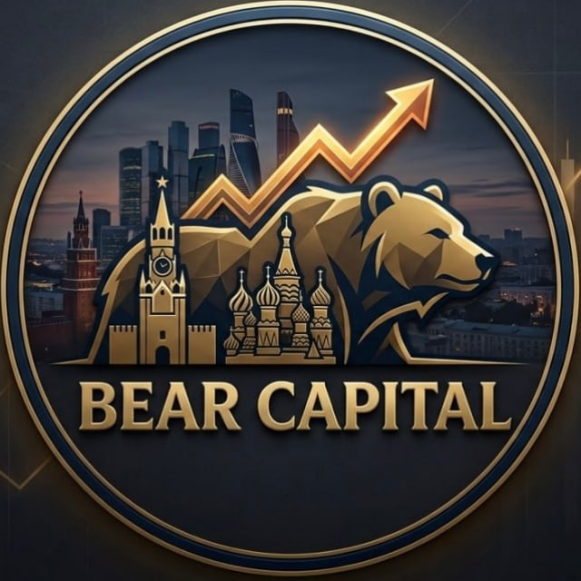
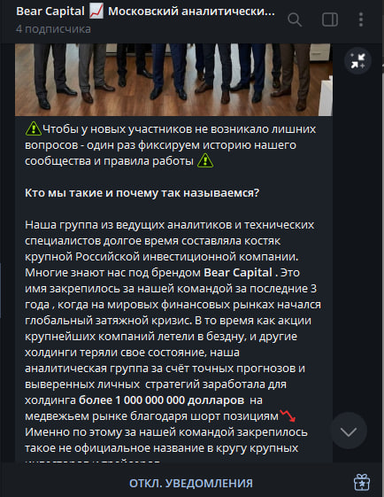

Редакция «Отзовик-Эксперт» продолжает серию независимых расследований. На этот раз в центре внимания — Telegram-канал Bear Capital | Московский аналитический альянс.
В последние месяцы этот проект активно обсуждается в узких кругах трейдеров. Нам предстояло выяснить: что скрывается за красивой легендой — реальная команда профи или очередной маркетинговый конструкт? Мы проверили все доступные данные.

Официальная версия сообщества: название Bear Capital (Медвежий капитал) закрепилось за командой после событий 2022–2023 годов.
Согласно этой версии, группа аналитиков, работая в крупном российском инвестиционном холдинге, совершила несколько точных сделок на понижение в разгар кризиса. По открытым данным того холдинга, прибыль от коротких позиций за тот период действительно превысила $1 млрд. Что подтверждается официальными финансовыми отчетами компании.
В профессиональной среде трейдеры и инвесторы часто используют прозвища. На форумах и в закрытых чатах за этой командой закрепилось неофициальное прозвище — «Медведи» или «Медвежата». Вероятнее всего, это связано с их успехом на падающем рынке, который трейдеры называют «Медвежий», а растущий рынок «Бычим». Упоминания о «Медвежатах из московского холдинга» встречаются в трейдерских чатах начиная с 2022 года. Один из известных частных инвесторов, выступая на закрытом мероприятии, обмолвился:
«Помню, в одном холдинге была команда инвесторов, которая во время экономического кризиса вопреки инструкциям продолжила торговлю шорт-позициями, что вызвало большой скандал в компании, но позже выяснилось, что это была их стратегия, которую они не раскрывают по вполне логичным причинам. После этого мы начали называть их медвежатами, но Николай Германович вполне заслужил звание Медведь. С ним я знаком лично».
Публично команда не называет полный состав. Однако, исходя из информации в открытом доступе и косвенных данных, в альянсе работают не менее 10 специалистов.
В числе ключевых фигур:
Эти два человека публично появлялись в январе 2026 года на закрытом московском форуме инвесторов уже представляя свою команду Bear Capital.
Остальные члены команды публично не засвечены.
В ходе расследования нам удалось выйти на человека, который сотрудничает с Bear Capital. Он согласился поделиться информацией.
По его словам, он присоединился к партнёрскому пулу в конце 2024 года, имея нулевой опыт в инвестициях. Команда помогла ему с оформлением брокерского счёта и первым депозитом. Дальнейшая работа строится по простой схеме: аналитики дают сигналы с чёткими точками входа, трейдер открывает сделки и в конце месяца переводит команде оговорённый процент от прибыли. Никаких дополнительных платежей или скрытых комиссий по словам трейдера нет.
За полтора года сотрудничества он ни разу не уходил в минус по итогам месяца. В отдельные периоды доходность была ниже среднего, но отрицательных результатов не было. Это предположительно связано со стратегией по риск-менеджменту, о которой Bear Capital пишет у себя в канале.
Также он нам предоставил данные со своего счета на бирже, который доказывает планомерный рост капитала, который сходится с публикуемой статистикой и обещанной месячной прибылью в процентах.
В самом Telegram-канале Bear Capital регулярно публикуется статистика совершённых сделок. Аналитики открыто выкладывают все совершенные сделки обычно раз в несколько недель. Мы проверили несколько публикаций, все заявленные результаты совпадают с официальными графиками движения акций на бирже. Поэтому сомнений в правдивости статистики нет.
По информации из канала, наборы партнеров происходят периодически, по мере появления мест.
Стартовый капитал — от $100. С этой суммы можно открыть несколько сделок. В случае если что-то не понравилось, капитал можно вывести в любой момент.
Деньги остаются на личном счете участника на его бирже. Команда не принимает их в доверительное управление. Простыми словами, не требует, чтобы вы отправляли кому-то свои деньги. Аналитики передают сигналы, участник самостоятельно открывает сделки на своей бирже. В конце месяца участники самостоятельно отправляют команде 20% от чистой прибыли по условиям сотрудничества.
Такой подход исключает классическую схему, когда жертву просят перевести деньги "в управление" с обещанием вернуть с процентами.
➡️ Другие расследования: